Backwards Problems
Backwards Problems
So far we started with an x-value and found its area:
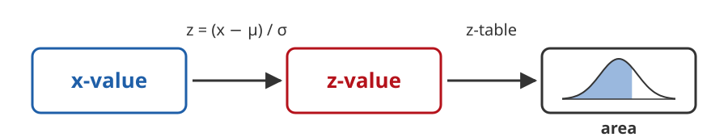
- Start with an x-value
- Compute its z-value
- Find the area with the z-table
Backwards Problems
Now we go the other way. We start with an area and find the x-value:
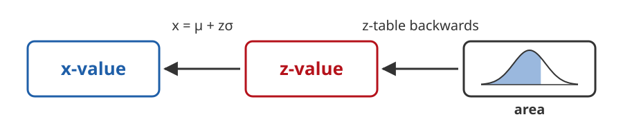
- Start with an area
- Find the z-value that gives that area
- Compute the x-value from the z-value
These are called backwards problems.
Using the Table Forwards
Before, we started with the z-value outside the table, in the row and column.
Then we read the area inside the table.
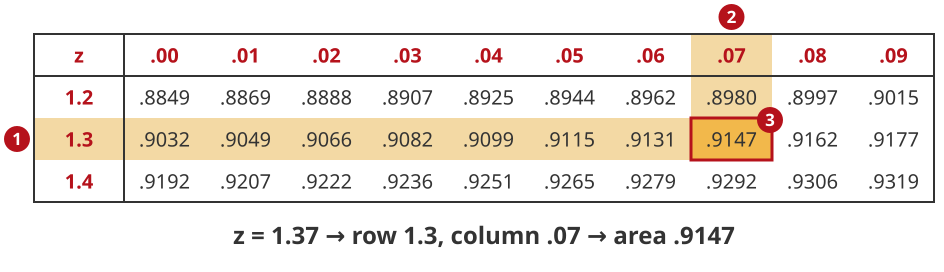
Using the Table Backwards
Now we start with the area inside the table, and read the z-value from the row and column.
Find the z-value with a left tail area of 0.70:
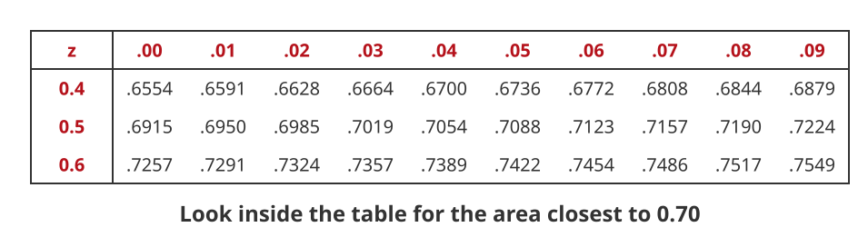
Using the Table Backwards
The area 0.70 is not in the table exactly. Find the two areas on either side of it:
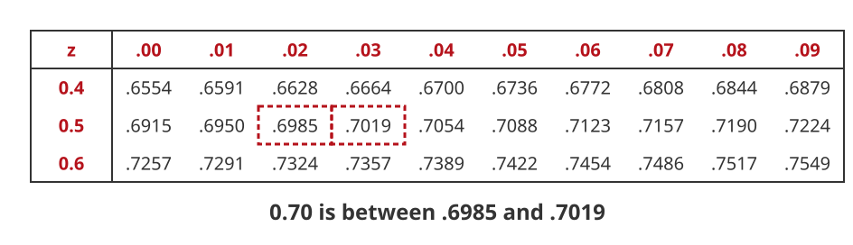
How far is each one from 0.70?
0.7019 - 0.70 = 0.0019 \qquad 0.70 - 0.6985 = 0.0015
Using the Table Backwards
Use the closest area. 0.6985 is only 0.0015 away, so it is closer than 0.7019:
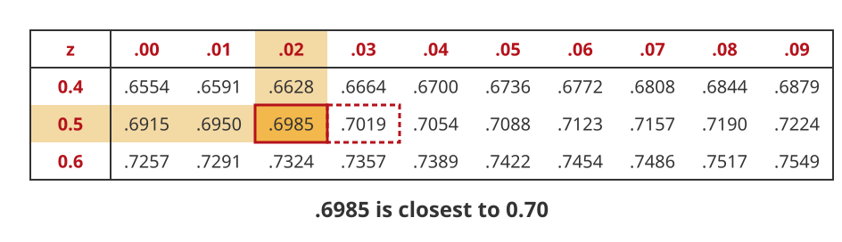
Using the Table Backwards
Read the z-value from the row and column of the closest area:
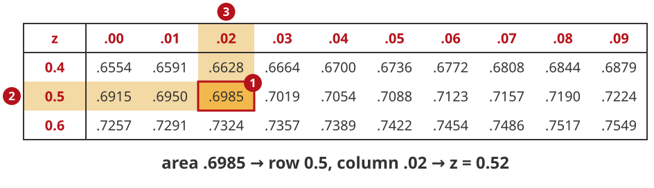
z = 0.52
Find Z for a Left Tail Area
Our table has left tail areas, so we look for the area directly.
1. Z for a Left Tail of 25%
Find the z-value that gives a left tail area of 25\%. Use the standard normal table.

1. Z for a Left Tail of 25%
Look for the area closest to 0.25:
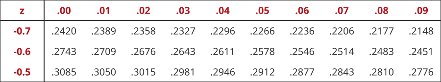
1. Z for a Left Tail of 25%
The area 0.25 is between 0.2483 and 0.2514:
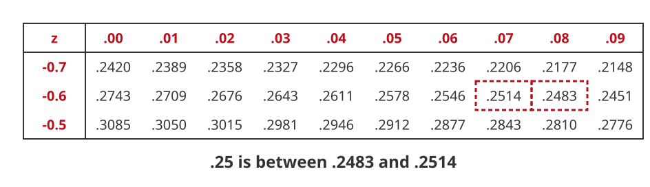
How far is each one from 0.25?
0.2514 - 0.25 = 0.0014 \qquad 0.25 - 0.2483 = 0.0017
1. Z for a Left Tail of 25%
The closest area is 0.2514, in the row -0.6 and the column .07:

z = -0.67
1. Z for a Left Tail of 25%
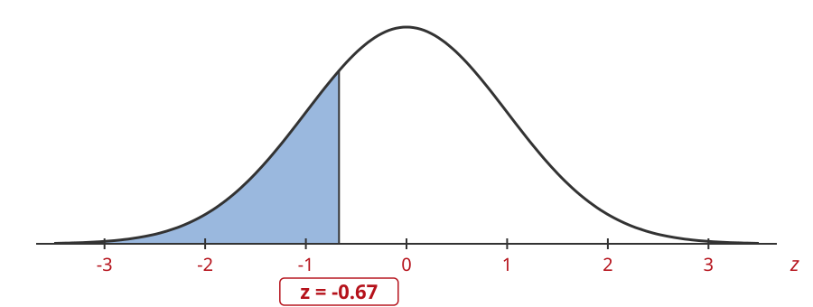
z = -0.67
Find Z for a Right Tail Area
Our table has only left tail areas. So we change the right tail into a left tail:
\text{left tail area} = 1.0 - \text{right tail area}
Then we look for that left tail area in the table.
2. Z for a Right Tail of 18%
Find the z-value that gives a right tail area of 18\%. Use the standard normal table.
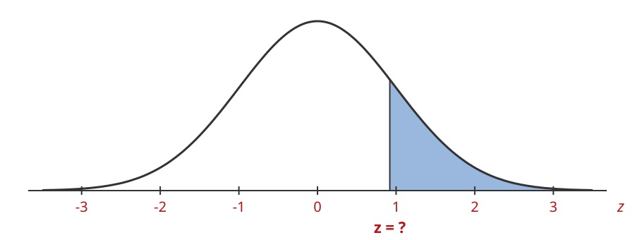
2. Z for a Right Tail of 18%
The right tail is 0.18, so the left tail is
\text{left tail area} = 1.0 - 0.18 = 0.82
2. Z for a Right Tail of 18%
Look for the area closest to 0.82:
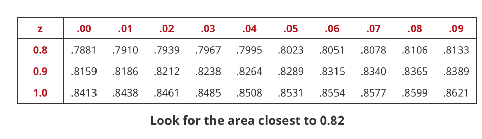
2. Z for a Right Tail of 18%
The area 0.82 is between 0.8186 and 0.8212:
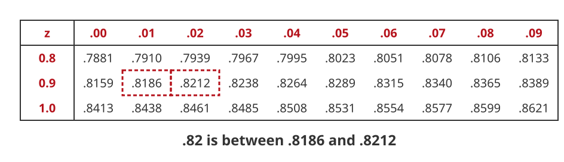
How far is each one from 0.82?
0.8212 - 0.82 = 0.0012 \qquad 0.82 - 0.8186 = 0.0014
2. Z for a Right Tail of 18%
The closest area is 0.8212, in the row 0.9 and the column .02:
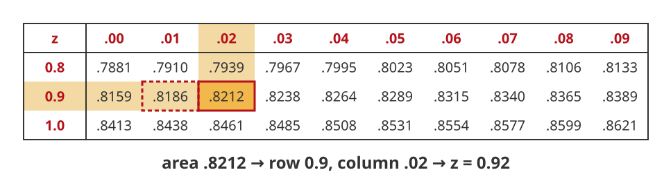
z = 0.92
2. Z for a Right Tail of 18%
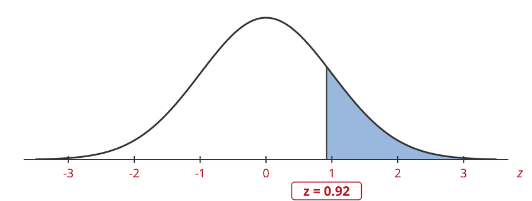
z = 0.92
Two Ways to Write the Z Formula
We have used this formula to go from x to z:
z = \frac{x - \mu}{\sigma}
We can write the same formula a second way, to go from z to x:
x = \mu + z\sigma
Both Formulas Say the Same Thing
Suppose \mu = 18 and \sigma = 3.
Going forwards from x = 24:
z = \frac{x - \mu}{\sigma} = \frac{24 - 18}{3} = \frac{6}{3} = 2
Going backwards from z = 2:
x = \mu + z\sigma = 18 + 2(3) = 18 + 6 = 24
Which Formula to Use
- Forwards (x to area): use z = \dfrac{x - \mu}{\sigma}
- Backwards (area to x): use x = \mu + z\sigma
x = \mu + z\sigma says: start at the mean and go z standard deviations.
A negative z means go below the mean, a positive z means go above it.
3. Find x that represents the bottom 25% of the data
A normal distribution has \mu = 18 and \sigma = 3. Find the x-value with a left tail area of 25\%.
3. Find x that represents the bottom 25% of the data
\mu = 18, \sigma = 3. We want the x-value whose left tail area is 0.25:
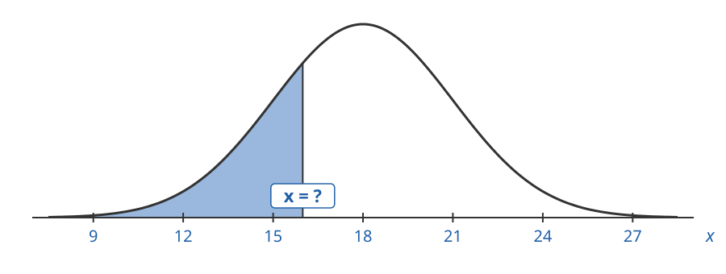
3. Find x that represents the bottom 25% of the data
First find the z-value with the same left tail area:
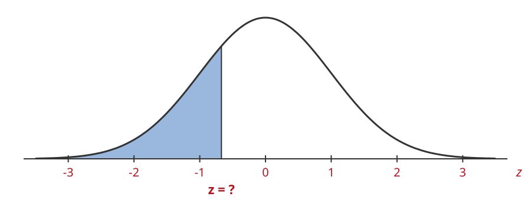
3. Find x that represents the bottom 25% of the data
Look for the area closest to 0.25:

3. Find x that represents the bottom 25% of the data
The area 0.25 is between 0.2483 and 0.2514:

How far is each one from 0.25?
0.2514 - 0.25 = 0.0014 \qquad 0.25 - 0.2483 = 0.0017
3. Find x that represents the bottom 25% of the data
The closest area is 0.2514, in the row -0.6 and the column .07:
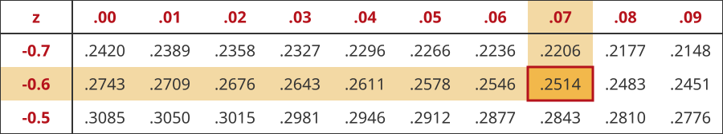
z = -0.67
3. Find x that represents the bottom 25% of the data
Plug z = -0.67, \mu = 18 and \sigma = 3 into x = \mu + z\sigma:
x = 18 + (-0.67)(3) = 18 - 2.01 = 15.99
3. Find x that represents the bottom 25% of the data
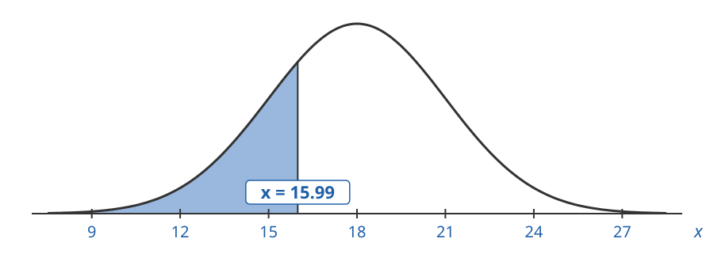
x = 15.99 has a left tail area of 25\%.
4. Find x that represents the top 15% of the data
A normal distribution has \mu = 23 and \sigma = 4. Find the x-value with a right tail area of 15\%.
4. Find x that represents the top 15% of the data
\mu = 23, \sigma = 4. We want the x-value whose right tail area is 0.15:
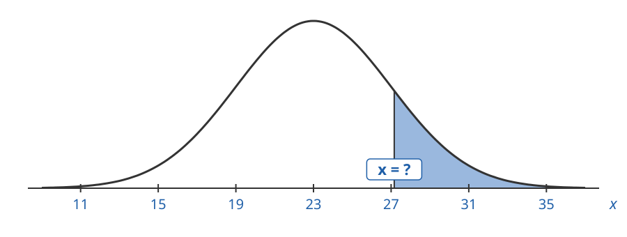
4. Find x that represents the top 15% of the data
First find the z-value with the same right tail area:
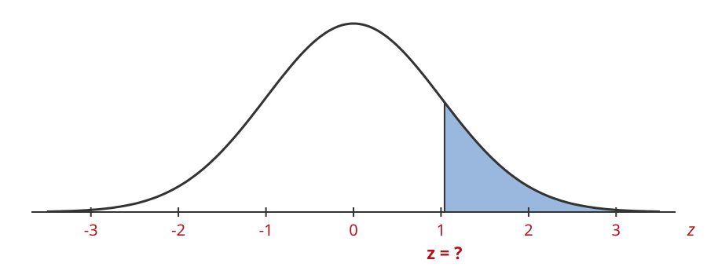
4. Find x that represents the top 15% of the data
The right tail is 0.15, so the left tail is
\text{left tail area} = 1.0 - 0.15 = 0.85
4. Find x that represents the top 15% of the data
Look for the area closest to 0.85:
4. Find x that represents the top 15% of the data
The area 0.85 is between 0.8485 and 0.8508:
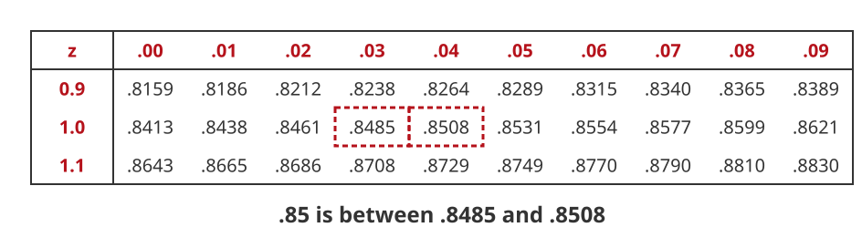
How far is each one from 0.85?
0.8508 - 0.85 = 0.0008 \qquad 0.85 - 0.8485 = 0.0015
4. Find x that represents the top 15% of the data
The closest area is 0.8508, in the row 1.0 and the column .04:
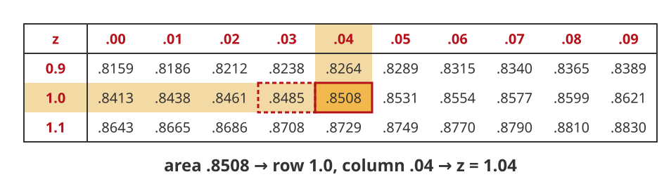
z = 1.04
4. Find x that represents the top 15% of the data
Plug z = 1.04, \mu = 23 and \sigma = 4 into x = \mu + z\sigma:
x = 23 + 1.04(4) = 23 + 4.16 = 27.16
4. Find x that represents the top 15% of the data
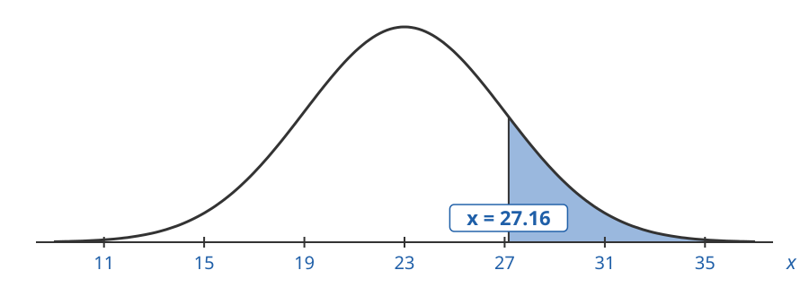
x = 27.16 has a right tail area of 15\%.